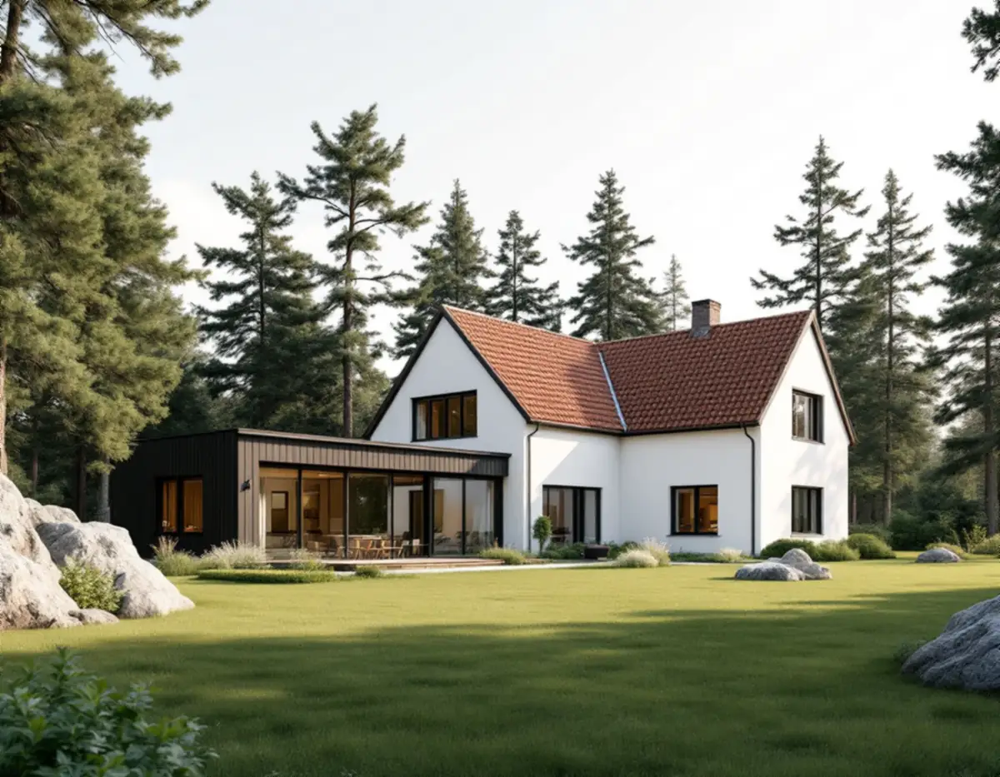
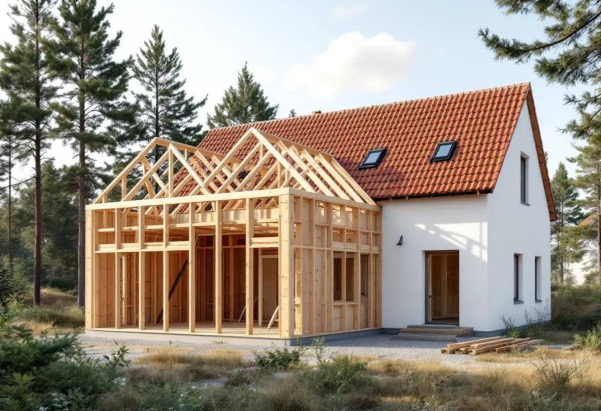

Webbkartan
Vi söker fram fastigheten och ser om det blå eller gula lagret berör den.
På Lidingö avgörs frågan om bygglov för en tillbyggnad ofta av ett blått lager i stadens webbkarta. Där syns de områden och fastigheter som har utökad lovplikt, och de särskilt värdefulla miljöerna beskrivs i stadens kulturmiljöprogram från 2024. Geal Entreprenad AB bygger till villor och radhus på Lidingö som total entreprenad och lämnar ett skriftligt kostnadsförslag efter ett gratis platsbesök.

Lidingö stad skriver att utökad lovplikt gäller för de flesta byggnadsåtgärder inom områden som är särskilt kulturhistoriskt värdefulla, och att bygglov då krävs för bland annat nybyggnad, tillbyggnad och fasadändring. Om din fastighet berörs ser du i stadens webbkarta: sök på adress eller fastighetsbeteckning, så visas ett blått lager över de områden och fastigheter som har utökad lovplikt.
Är fastigheten i stället gulmarkerad kan det finnas värden som behöver bedömas, och då ber staden dig kontakta kundcenter för vägledning. Utanför de markerade områdena kan en tillbyggnad på upp till 30 kvadratmeter göras utan bygglov.
Stadens svar på vanliga frågor gör en viktig poäng: inom de utpekade kulturmiljöerna gäller samma regler för alla fastigheter när det gäller de lovfria åtgärderna, även om just ditt hus inte är särskilt värdefullt. Det är alltså området som avgör, inte bara huset.

Kommunfullmäktige antog det nya kulturmiljöprogrammet den 16 december 2024. Det ersatte programmet från 1990, efter att hela Lidingö inventerats. Vissa kvarter som förlorat sina värden togs bort och nya områden lades till. Programmet har två delar: en handbok för fastighetsägare och en bebyggelsehistorisk beskrivning av de särskilt värdefulla områdena, med råd och riktlinjer för varje område.
Bland de utpekade miljöerna finns villastäder som Lidingö villastad, Herseruds villastad och Breviks villastad, men också radhusområden som Mölna radhusby och kolonierna i Dalakolonin och Grönstakolonin. Lidingö har dessutom nio byggnadsminnen, däribland radhusen på Canadastigen, som skyddas enligt kulturmiljölagen och där länsstyrelsen hanterar tillstånd för ändringar.
Staden påpekar att programmet är ett kunskapsunderlag och inte juridiskt bindande, och att det inte påverkar byggrätten enligt detaljplanen. Men det används som stöd när bygglov prövas, så det är de råden vi utgår från när en tillbyggnad ritas i ett utpekat område.
Om ett hus inte finns med i kulturmiljöprogrammet men omfattas av en detaljplan med skydd av kulturvärden eller rivningsförbud är det enligt staden ändå särskilt kulturhistoriskt värdefullt, eftersom frågan redan är avgjord i planen. I dagens planer används främst tre beteckningar: q för skydd av kulturvärden, k för byggnadens karaktärsdrag och r för rivningsförbud. Äldre planer kan ha andra beteckningar.
I övrigt får de flesta lovfria åtgärder på en- och tvåbostadshus göras även om de strider mot detaljplanen, och staden nämner tillbyggnad som exempel. Staden har också äldre inventeringar av enskilda byggnader från 1970- och 1980-talen och från 2013–2015, som du kan be kundcenter om att få ta del av.
För åtgärder som normalt inte kräver bygglov kan du på Lidingö ansöka om ett frivilligt bygglov (PBL 9 kap. 52 §). Staden beskriver det som ett beslut som ger dig som byggherre trygghet i att åtgärden uppfyller lagens krav. Det kan vara värt det när tillbyggnaden ligger nära gränsen för potten eller i utkanten av ett utpekat område.
Även lovfritt ska utföras varsamt med hänsyn till husets och områdets karaktär, och en anmälan krävs om ventilation, brandskydd, bärande konstruktion eller vatten och avlopp ändras. Hur den nya takdelen ansluts mot den gamla läser du om under takrenovering på Lidingö, och samordning av hela projektet beskriver vi under byggföretag på Lidingö.
Vi söker fram fastigheten och ser om det blå eller gula lagret berör den.
Detaljplanens bestämmelser och kulturmiljöprogrammets råd för området läses.
Huset, tomten och takets höjder mäts upp och dina önskemål gås igenom.
En skiss som passar huset och ett skriftligt kostnadsförslag med delarna var för sig.
Det underlag som krävs tas fram innan bygget börjar.
Tillbyggnaden byggs och ansluts tätt mot huset, och vi går igenom resultatet med dig.
Skatteverket ger rotavdrag för tillbyggnad av ett småhus när tillbyggnaden sitter ihop med husets befintliga yttervägg till minst 75 procent av en sida, eller när det finns en dörr emellan. Huset ska vara äldre än fem år och större delen av stommen ska vara kvar.
Avdraget är 30 procent av arbetskostnaden, upp till 50 000 kr per person och år. Material, resor och utrustning räknas inte. Geal drar av det direkt på fakturan.
Om bygglov eller frivilligt bygglov ska sökas, vilka material och detaljer kulturmiljöprogrammet pekar på, tomtens terräng och grund, hur tillbyggnaden ansluts mot tak och fasad och vilka installationer som ska in. Efter ett gratis platsbesök får du ett skriftligt kostnadsförslag.
Mer boyta i samma hus.
Tillbyggnad →Takbyte, takbesiktning och plåtarbeten.
Takläggare på Lidingö →Brevik, Mölna och Käppala.
Takrenovering på Lidingö →Potten, avloppet och kulturmiljöerna.
Attefallshus på Lidingö →Värdefulla hus, kulör och bidrag.
Fasadmålning på Lidingö →Villastäderna och Brevik på Lidingö.
Fönsterbyte på Lidingö →Slipa och behandla trägolv i kök och hall.
Golvslipning på Lidingö →Plåt i vind och värdefulla miljöer.
Plåtslagare på Lidingö →Nytt material, k-märkning och byggnadsminnen.
Takbyte på Lidingö →Ny tapet med hänsyn till huset.
Tapetsering på Lidingö →Villastad, källarbadrum och gästhus.
Badrumsrenovering på Lidingö →Villastäder, radhusbyar och berg.
Byggföretag på Lidingö →Radhus, villor och putsfasader på Lidingö.
Fasadrenovering på Lidingö →Souterrängvillor, radhus och äldre villor på Lidingö.
Golvläggare på Lidingö →Villastäder, souterräng och radhusbyar.
Köksrenovering på Lidingö →Villastäder, radhusbyar och stugor på Lidingö.
Målare på Lidingö →Verandor, trappor och dörrar.
Snickare på Lidingö →Behåll stommen, bygg om resten.
Totalrenovering på Lidingö →